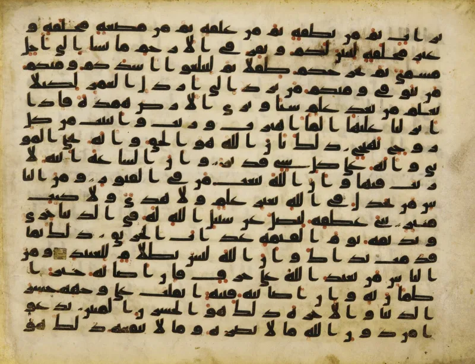
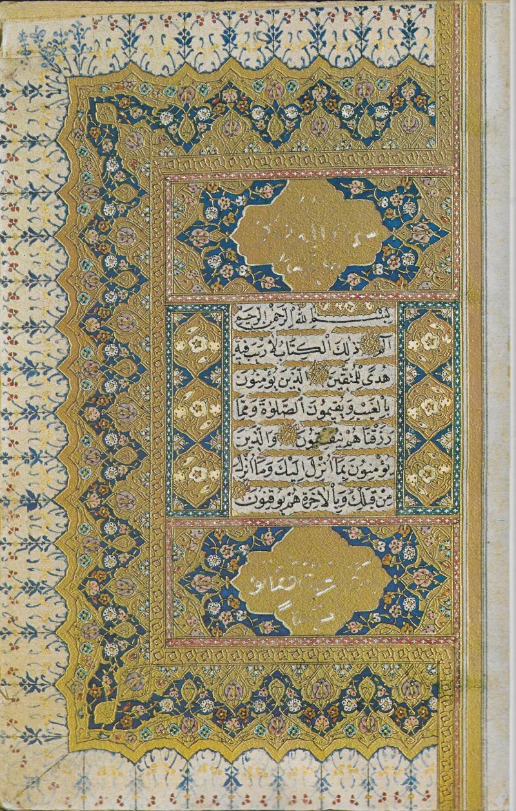

Quran 2:62 promises reward, 3:85 accepts only Islam
ContestedMuslim scholars have a real answer here. Say so before your friend does.
The two verses
Quran 2:62 promises that those who believed, and the Jews, and the Christians, and the Sabians — "whoever believed in Allah and the Last Day and did righteousness" — will have their reward, with no fear upon them. Quran 5:69 repeats it almost word for word.
Quran 3:85 says: "Whoever desires other than Islam as religion — never will it be accepted from him." Quran 3:19 says the same.
How the classical scholars handled it
They felt the collision. Al-Tabari's tafsir on 2:62 records Ibn Abbas saying the verse was abrogated by 3:85.
Mujahid and al-Dahhak held that 2:62 still stands. Al-Tabari himself preferred a narrowed reading.
What settles it in practice
Sahih Muslim 153 is unambiguous. Any Jew or Christian who hears of Muhammad and dies without believing his message "will be among the inhabitants of the Fire."
The Muslim answer, at full strength
The Yaqeen Institute argues there is no contradiction. On the majority reading, 2:62 addresses Jews, Christians and Sabians who lived faithfully before Muhammad, or who accept him once his message reaches them.
"Whoever believed in Allah and the Last Day" means belief on Islam's terms, which after 610 AD includes Muhammad's prophethood. Others note that when Ibn Abbas said naskh he often meant takhsis, specification, not repeal.
So 3:85 clarifies the scope rather than cancelling a promise. On that view one doctrine holds across time: each era's believers follow the prophet sent to them.
How strong is this argument?
Genuinely arguable, so do not overclaim. The narrowing reading is coherent, and classical authorities held it.
But nothing in 2:62's wording limits it to a past era, so the limit has to be imported. And the abrogation report in Islam's own premier tafsir shows the earliest readers felt the clash.
Use it for clarity, not for a win: a friend who quotes 2:62 to show Islam honours Christians should know what his own tradition says next.
What to say
"You quoted 2:62 to me. May I show you what Sahih Muslim 153 says beside it?"



How they answer this — at its strongest
They say 2:62 means those who believe on Islam's terms, so nothing clashes.
Most Muslim commentators deny any contradiction, and the Yaqeen Institute sets out the case. On the majority reading, 2:62 speaks of Jews, Christians and Sabians who lived faithfully before Muhammad. It also covers those who accept him once his message reaches them. Whoever believed in Allah and the Last Day means belief on Islam's own terms. After 610 AD that includes Muhammad's prophethood.
Others note what Ibn Abbas meant by naskh, abrogation. He often meant takhsis, narrowing the scope. So 3:85 makes the reach of 2:62 plain. It does not cancel a salvation once offered.
On this view the verses teach one doctrine across time. Each era's believers must follow the prophet sent to them, and after Muhammad that means Islam. The Quran elsewhere faults Jews and Christians for failing their own covenants. So 2:62 was never a blanket pluralism.
The verdict
Both sides have a case: use it for clarity, not to win a point.
This is graded contested, not unrefuted. The narrowing reading is a coherent fit that the Arabic can bear. Classical authorities held it, including Mujahid, al-Dahhak and arguably al-Tabari himself. This site does not overclaim.
But the argument keeps real force. The narrowing has to be imported. Nothing in 2:62's wording limits it to a past era. The abrogation report in Islam's own leading tafsir concedes that the earliest readers felt the clash. And Sahih Muslim 153 makes the working doctrine plain.
The use is not a gotcha but clarity. A friend who cites 2:62 to show that Islam honours Christians should know what his own tradition says next. It denies that Christians who remain Christians are saved. Set that beside the New Testament's one steady claim (John 14:6; Acts 4:12), and a God with whom there is no variation (James 1:17).
Sources
- Quran 2:62 (quran.com)
- Quran 3:85 (quran.com)
- Sahih Muslim 153 (sunnah.com)
- Yaqeen Institute — Abrogated Rulings in the Qur'an
- Answering Islam — Abrogated Verses of the Quran